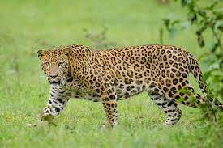

Location : Near Rajamahendravaram in the Papi Hills in East Godavari and West Godavari districts of
Andhra Pradesh
Established in : 1978
Area : 1012.86 km2 Flora : Moist deciduous and dry deciduous forests
Fauna : Mammals including Bengal tiger, Indian leopard, rusty-spotted cat, jungle cat, leopard cat,
sloth bear, small Indian civet, Asian palm civet, wild boar and honey badger. Herbivores recorded include spotted
deer, sambar deer, Indian muntjac, Indian spotted chevrotain, gaur, nilgai and four-horned antelope.
Birds include Black-bellied tern, Pale-capped pigeon, Yellow-throated bulbul, Oriental darter, Pallid harrier,
Great Thick-knee, River lapwing, River tern, Malabar pied hornbill, Alexandrine parakeet.
Reptiles include Indian golden gecko, King cobra, etc.
Features : Important Bird and Biodiversity Area and home to some endangered species of flora and fauna
Threats : Polavaram irrigation project will submerge some parts of national park after completion.
Papikonda National Park

Leopard
Bengal tiger
King cobra
Rajiv Gandhi National Park (Rameswaram)
Location : Rameswaram of Kadapa District in Andhra Pradesh, on the north bank of Penna River
Established in : 2005
Area : 2.4 km2 Flora : Tree species include Dalbergia sissoo, Grewia villosa, and Gymnema sylvestre.
Fauna : There are about 50 bird species including little egrets, peacocks and parakeets.
Invertebrates include scorpions, spiders, butterflies, grasshoppers, and crickets. Amphibian fauna is represented
by species such as Bullfrog and Asian common toad. Reptilian fauna includes Russell's boa, Russell's viper, Common
skink. Mammals like Spotted deer, Indian gray mongoose, and Black-napped hare reside in this dune ecosystem.
Rajiv Gandhi National Park
Spotted deer
Bullfrog
Sri Venkateswara National Park
Location : Eastern Ghats spread over the Seshachalam hills of Kadapa district and Tirumala hills
of Chittoor district.
Established in : 1989
Area : 353 km2 Flora : Dry deciduous mixed forest with parts of moist deciduous forests in valleys. There are about
1500 vascular plant species of 174 families.
Fauna : About 178 species of birds have been identified including yellow-throated bulbul, grey-fronted
pigeon, critically endangered Oriental white-backed vulture with some other birds like large hawk-cuckoo, blue-faced
malkoha, yellow-browed bulbul, Indian scimitar-babbler and Loten's sunbird.
The Asian elephant, that was not spotted in Andhra Pradesh, appeared here in 1984.
Predators include leopard, wild dog, golden jackal, Indian fox, small Indian civet and jungle cat.
Sloth beer, sambar, spotted deer, mouse deer, barking deer, wild boar, four-horned antelope, slender loris, Indian giant
squirrel, tree shrew, etc. are other mammals encountered.
Reptiles include gliding lizard, Indian golden gecko, etc.
Features : Known for many waterfalls including the Talakona, Gundalakona and Gunjana